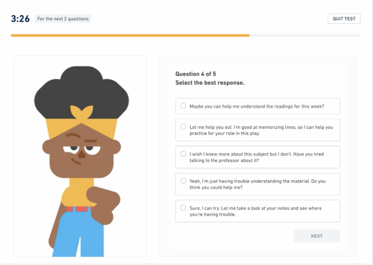

DM Training Grounds
Logout
Dashboard
Chatbot
Quiz: Check or Saving Throw?

Answer the following questions by selecting the appropriate type of roll for each scenario.
1. The rogue is trying to sneak past a group of guards. What kind of roll should they make?
Skill Check (Stealth)
Saving Throw (Dexterity)
2. A fireball spell explodes near the party. What kind of roll should they make?
Skill Check (Dexterity)
Saving Throw (Dexterity)
3. The bard tries to convince a merchant to lower their prices. What kind of roll should they make?
Skill Check (Persuasion)
Saving Throw (Charisma)
4. The party encounters a trap that releases poisonous gas. What kind of roll should they make?
Skill Check (Investigation)
Saving Throw (Constitution)
5. The wizard is attempting to identify a magical artifact. What kind of roll should they make?
Skill Check (Arcana)
Saving Throw (Wisdom)
Submit Quiz